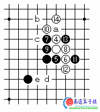
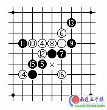
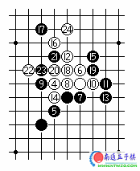
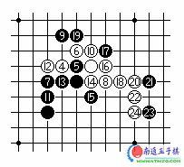
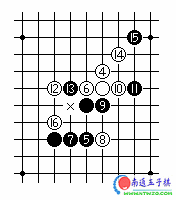
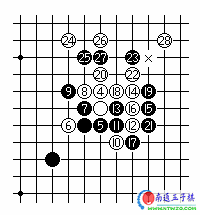

彗星为什么必输
#1 彗星为什么必输作者：有志青年 发表时间：2007-2-23 12:06:52

图1 白4应在I10点，白4不应是好着，以后黑被迫应付，以下着至白14后，白棋有a、b、c等的先手。黑棋虽也有d、e的先手，但没有后续手段，白已胜定。

图2 白4守于G9点，跳二。黑5选择G7点，黑5选定于G7点；白6成双二，直至为定式，黑方必败无疑！黑7成二；白8活三。黑9防守；白10冲四。黑11必应；白12斜活三。黑13守于J11点；白14跳冲四。黑15必应；白16一招跳三(或着于E10点活三)，将迫使黑方形成“三、三”禁手，白方胜定。本局的棋谱为：H8、I9、F6(慧星)、G9、G7、I10、I8、H9、J9、F9、E9、G8、J11、E6、F7、I6。至此，盘面第16着棋，白方将迫使黑方于H7点形成“三、三”禁手，白方追下取胜。

图3 黑9变招，防守于F9点；白10冲四。黑11必应；白12斜活三。黑13反跳三；白14反斜活三，而且可于J11、G12、G11连续冲四叫杀。黑15只得守于J11点；白16冲四。黑17必应；白18做杀。黑19守于J10点，企图于L8点冲四活三叫杀，但是已经晚矣！白20冲四；白22跳冲四；白24跳冲四活三，胜定。本局的棋谱为：H8、I9、F6(慧星)、G9、G7、I10、I8、H9、F9、J9、K9、H11、K8、G8、J11、G12、F13、H10、J10、G10、G11、E10、F10、H13。至此，盘面第24着棋，白方冲四活三，胜定。
黑7若守于F8点，或G10点，白方如何取胜？

图4 黑5选定于H9点；白6斜成双二。黑7亦成双二；白8斜活三。黑9防守；白10成角。黑11活三；白12防守。黑13活三；白14反三。黑15防守；白16做棋。黑17守住对方的双三点；白18斜活三。黑19防守；白20冲四；白22再冲四；白24跳冲四活三，胜定。本局的棋谱为：H8、I9、F6(慧星)、G9、H9、H10、F8、J8、G11、I10、F7、F9、G8、I8、I7、J9、J10、K8、H11、L8、M8、L7、M6、L6。至此，盘面第24着棋，白方冲四活三，胜定。

图5 白4守于I10点。黑5选定于H6点；白6成角。黑7活三；白8防守。黑9防于I8点；白10活三。黑11防守；白12跳冲四。黑13必应；白14斜活三。黑15防守于K12点；白16斜跳冲四，将迫使黑方于x点着子，形成“三、三”禁手，白方胜定。本局的棋谱为：H8、I9、F6(慧星)、I10、H6、H9、G6、I6、I8、J9、K9、F9、G9、J11、K12、F7。至此，盘面第16着棋，白方斜跳冲四，将迫使黑方于G8点着子，形成“三、三”禁手，白方追下取胜。

图6 黑5选定于I8点；白6斜跳二。黑7成角；白8亦成角。黑9斜活三；白10防守。黑11成一个眠三；白12斜成二。黑13防守；白14阻挡对方的斜二，同时跳二。黑15防守；白16活三。黑17防守；白18冲四。黑19必应；白20斜活三。黑21反活三，但是已经晚矣！白22、24、26连续冲四。白28斜跳冲四，将迫使黑方于x点落子，形成“四、四”禁手，白方胜定。本局的棋谱为：H8、I9、F6(慧星)、I10、I8、G8、H9、H10、G10、J7、J8、K8、J9、K10、L9、K9、K7、J10、L10、I11、L8、K11、K12、G13、H12、I13、I12、M13。至此，盘面第28着棋，黑方将被迫于L12点落子，形成“四、四”禁手，白方追下取胜。
#2 Re:彗星为什么必输作者：蟒河 发表时间：2007-3-9 22:53:01
不错，看起来很累！
#3 Re:彗星为什么必输作者：凌云 发表时间：2007-7-25 10:12:12
怎么讲的全是黑下错的点呢.#4 Re:彗星为什么必输作者：笨蛋020 发表时间：2007-10-19 20:38:50
网上这个谱狠多了#5 Re:彗星为什么必输作者：uc0011 发表时间：2007-10-23 15:36:58
我学习了 有点难#6 Re:彗星为什么必输作者：吕内咸 发表时间：2007-11-12 16:39:55
要看对手，彗星开局未必必输